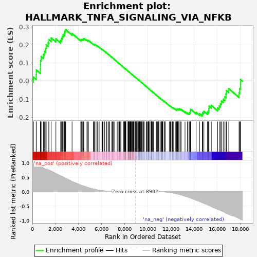

| | | Dataset | deseq_res_for_gsea |
| Phenotype | NoPhenotypeAvailable |
| Upregulated in class | na_pos |
| GeneSet | HALLMARK_TNFA_SIGNALING_VIA_NFKB |
| Enrichment Score (ES) | 0.28493068 |
| Normalized Enrichment Score (NES) | 1.0235317 |
| Nominal p-value | 0.36438924 |
| FDR q-value | 0.79700243 |
| FWER p-Value | 1.0 |
Table: GSEA Results Summary

Fig 1: Enrichment plot: HALLMARK_TNFA_SIGNALING_VIA_NFKB
Profile of the Running ES Score & Positions of GeneSet Members on the Rank Ordered List
| PROBE | GENE SYMBOL | GENE_TITLE | RANK IN GENE LIST | RANK METRIC SCORE | RUNNING ES | CORE ENRICHMENT | | 1 | CXCL11 | | | 93 | 0.978 | 0.0222 | Yes |
| 2 | SAT1 | | | 328 | 0.948 | 0.0358 | Yes |
| 3 | SERPINB2 | | | 340 | 0.947 | 0.0617 | Yes |
| 4 | PTGER4 | | | 690 | 0.872 | 0.0667 | Yes |
| 5 | SPHK1 | | | 700 | 0.869 | 0.0905 | Yes |
| 6 | RELA | | | 710 | 0.866 | 0.1143 | Yes |
| 7 | SOD2 | | | 757 | 0.857 | 0.1357 | Yes |
| 8 | PHLDA2 | | | 954 | 0.812 | 0.1476 | Yes |
| 9 | SERPINB8 | | | 1058 | 0.790 | 0.1639 | Yes |
| 10 | CXCL2 | | | 1159 | 0.786 | 0.1804 | Yes |
| 11 | IL12B | | | 1194 | 0.786 | 0.2005 | Yes |
| 12 | CCRL2 | | | 1365 | 0.755 | 0.2122 | Yes |
| 13 | GCH1 | | | 1431 | 0.743 | 0.2294 | Yes |
| 14 | BCL2A1 | | | 1624 | 0.706 | 0.2385 | Yes |
| 15 | LDLR | | | 2034 | 0.623 | 0.2332 | Yes |
| 16 | RCAN1 | | | 2444 | 0.541 | 0.2256 | Yes |
| 17 | PLPP3 | | | 2524 | 0.528 | 0.2360 | Yes |
| 18 | GPR183 | | | 2592 | 0.518 | 0.2468 | Yes |
| 19 | TRIP10 | | | 2661 | 0.505 | 0.2571 | Yes |
| 20 | CXCL6 | | | 2785 | 0.476 | 0.2636 | Yes |
| 21 | NR4A2 | | | 2804 | 0.471 | 0.2758 | Yes |
| 22 | ID2 | | | 2872 | 0.458 | 0.2849 | Yes |
| 23 | IL1B | | | 3433 | 0.344 | 0.2634 | No |
| 24 | DENND5A | | | 4186 | 0.221 | 0.2278 | No |
| 25 | ATF3 | | | 4255 | 0.210 | 0.2299 | No |
| 26 | DDX58 | | | 4356 | 0.196 | 0.2298 | No |
| 27 | HBEGF | | | 4432 | 0.187 | 0.2309 | No |
| 28 | CCL20 | | | 4455 | 0.184 | 0.2348 | No |
| 29 | DUSP4 | | | 4652 | 0.157 | 0.2283 | No |
| 30 | YRDC | | | 4762 | 0.142 | 0.2262 | No |
| 31 | RNF19B | | | 4852 | 0.132 | 0.2249 | No |
| 32 | BTG3 | | | 5270 | 0.085 | 0.2041 | No |
| 33 | PMEPA1 | | | 5338 | 0.079 | 0.2026 | No |
| 34 | NAMPT | | | 5406 | 0.072 | 0.2009 | No |
| 35 | CSF2 | | | 5414 | 0.071 | 0.2025 | No |
| 36 | NR4A3 | | | 5578 | 0.057 | 0.1950 | No |
| 37 | HES1 | | | 5638 | 0.051 | 0.1931 | No |
| 38 | CDKN1A | | | 5756 | 0.043 | 0.1878 | No |
| 39 | PLK2 | | | 5832 | 0.039 | 0.1847 | No |
| 40 | CD44 | | | 6019 | 0.029 | 0.1752 | No |
| 41 | TNFAIP6 | | | 6070 | 0.027 | 0.1732 | No |
| 42 | TNFAIP8 | | | 6113 | 0.025 | 0.1715 | No |
| 43 | ZFP36 | | | 6255 | 0.019 | 0.1642 | No |
| 44 | TUBB2A | | | 6432 | 0.012 | 0.1548 | No |
| 45 | GEM | | | 6440 | 0.012 | 0.1547 | No |
| 46 | MAP2K3 | | | 6585 | 0.008 | 0.1469 | No |
| 47 | FJX1 | | | 6638 | 0.007 | 0.1442 | No |
| 48 | JUN | | | 6664 | 0.006 | 0.1430 | No |
| 49 | SLC16A6 | | | 6876 | 0.004 | 0.1314 | No |
| 50 | NR4A1 | | | 6932 | 0.003 | 0.1284 | No |
| 51 | DUSP1 | | | 6945 | 0.003 | 0.1278 | No |
| 52 | IER5 | | | 7017 | 0.002 | 0.1239 | No |
| 53 | CXCL3 | | | 7123 | 0.002 | 0.1181 | No |
| 54 | PDLIM5 | | | 7338 | 0.001 | 0.1062 | No |
| 55 | PDE4B | | | 7419 | 0.000 | 0.1018 | No |
| 56 | PLAUR | | | 7514 | 0.000 | 0.0966 | No |
| 57 | BTG2 | | | 7534 | 0.000 | 0.0955 | No |
| 58 | EDN1 | | | 7606 | 0.000 | 0.0916 | No |
| 59 | ACKR3 | | | 7663 | 0.000 | 0.0885 | No |
| 60 | FOSL1 | | | 7905 | 0.000 | 0.0751 | No |
| 61 | SOCS3 | | | 7921 | 0.000 | 0.0742 | No |
| 62 | B4GALT5 | | | 7943 | 0.000 | 0.0731 | No |
| 63 | DUSP5 | | | 7985 | 0.000 | 0.0708 | No |
| 64 | SMAD3 | | | 8028 | 0.000 | 0.0684 | No |
| 65 | CCND1 | | | 8054 | 0.000 | 0.0670 | No |
| 66 | SGK1 | | | 8072 | 0.000 | 0.0661 | No |
| 67 | F2RL1 | | | 8088 | 0.000 | 0.0653 | No |
| 68 | CCL2 | | | 8270 | 0.000 | 0.0552 | No |
| 69 | PTPRE | | | 8280 | 0.000 | 0.0547 | No |
| 70 | SDC4 | | | 8304 | 0.000 | 0.0534 | No |
| 71 | MAFF | | | 8346 | 0.000 | 0.0511 | No |
| 72 | FOSL2 | | | 8353 | 0.000 | 0.0508 | No |
| 73 | TNFSF9 | | | 8377 | 0.000 | 0.0495 | No |
| 74 | SLC2A3 | | | 8392 | 0.000 | 0.0487 | No |
| 75 | SLC2A6 | | | 8442 | 0.000 | 0.0460 | No |
| 76 | IER3 | | | 8477 | 0.000 | 0.0441 | No |
| 77 | KLF6 | | | 8484 | 0.000 | 0.0438 | No |
| 78 | AREG | | | 8486 | 0.000 | 0.0437 | No |
| 79 | SPSB1 | | | 8519 | 0.000 | 0.0420 | No |
| 80 | KLF2 | | | 8520 | 0.000 | 0.0420 | No |
| 81 | GADD45B | | | 8561 | 0.000 | 0.0397 | No |
| 82 | PLAU | | | 8629 | 0.000 | 0.0360 | No |
| 83 | LIF | | | 8671 | 0.000 | 0.0337 | No |
| 84 | ETS2 | | | 8699 | 0.000 | 0.0322 | No |
| 85 | IL18 | | | 8712 | 0.000 | 0.0316 | No |
| 86 | PHLDA1 | | | 8755 | 0.000 | 0.0292 | No |
| 87 | PFKFB3 | | | 8765 | 0.000 | 0.0287 | No |
| 88 | IL7R | | | 8768 | 0.000 | 0.0286 | No |
| 89 | F3 | | | 8858 | 0.000 | 0.0237 | No |
| 90 | TNFAIP2 | | | 8932 | 0.000 | 0.0196 | No |
| 91 | ICAM1 | | | 8943 | -0.000 | 0.0190 | No |
| 92 | BIRC3 | | | 8948 | -0.000 | 0.0188 | No |
| 93 | TRAF1 | | | 8956 | -0.000 | 0.0184 | No |
| 94 | ABCA1 | | | 8968 | -0.000 | 0.0178 | No |
| 95 | TNFAIP3 | | | 9025 | -0.000 | 0.0147 | No |
| 96 | NFKBIE | | | 9029 | -0.000 | 0.0145 | No |
| 97 | RELB | | | 9038 | -0.000 | 0.0141 | No |
| 98 | TNFRSF9 | | | 9060 | -0.000 | 0.0129 | No |
| 99 | MARCKS | | | 9064 | -0.000 | 0.0127 | No |
| 100 | NFKB2 | | | 9136 | -0.000 | 0.0088 | No |
| 101 | EGR2 | | | 9146 | -0.000 | 0.0083 | No |
| 102 | IFIH1 | | | 9202 | -0.000 | 0.0052 | No |
| 103 | IL23A | | | 9204 | -0.000 | 0.0052 | No |
| 104 | IL15RA | | | 9240 | -0.000 | 0.0032 | No |
| 105 | CD83 | | | 9278 | -0.000 | 0.0012 | No |
| 106 | SQSTM1 | | | 9279 | -0.000 | 0.0012 | No |
| 107 | JAG1 | | | 9318 | -0.000 | -0.0009 | No |
| 108 | TAP1 | | | 9371 | -0.000 | -0.0038 | No |
| 109 | NFKBIA | | | 9394 | -0.000 | -0.0051 | No |
| 110 | FUT4 | | | 9432 | -0.000 | -0.0071 | No |
| 111 | INHBA | | | 9464 | -0.000 | -0.0088 | No |
| 112 | TNIP1 | | | 9556 | -0.000 | -0.0139 | No |
| 113 | IL6ST | | | 9614 | -0.000 | -0.0171 | No |
| 114 | PANX1 | | | 9653 | -0.000 | -0.0192 | No |
| 115 | NINJ1 | | | 9667 | -0.000 | -0.0199 | No |
| 116 | BMP2 | | | 9846 | -0.000 | -0.0298 | No |
| 117 | TRIB1 | | | 9910 | -0.000 | -0.0333 | No |
| 118 | IFIT2 | | | 9960 | -0.000 | -0.0360 | No |
| 119 | IFNGR2 | | | 10034 | -0.000 | -0.0401 | No |
| 120 | CEBPB | | | 10056 | -0.000 | -0.0413 | No |
| 121 | NFKB1 | | | 10063 | -0.000 | -0.0416 | No |
| 122 | MYC | | | 10082 | -0.000 | -0.0426 | No |
| 123 | BTG1 | | | 10154 | -0.000 | -0.0466 | No |
| 124 | PNRC1 | | | 10254 | -0.000 | -0.0521 | No |
| 125 | DRAM1 | | | 10270 | -0.000 | -0.0529 | No |
| 126 | BIRC2 | | | 10279 | -0.000 | -0.0533 | No |
| 127 | IRF1 | | | 10283 | -0.000 | -0.0535 | No |
| 128 | TNIP2 | | | 10348 | -0.000 | -0.0571 | No |
| 129 | BCL3 | | | 10352 | -0.000 | -0.0572 | No |
| 130 | CCL5 | | | 10359 | -0.000 | -0.0575 | No |
| 131 | KLF9 | | | 10416 | -0.000 | -0.0606 | No |
| 132 | TGIF1 | | | 10478 | -0.001 | -0.0640 | No |
| 133 | TSC22D1 | | | 10711 | -0.001 | -0.0769 | No |
| 134 | MSC | | | 10724 | -0.001 | -0.0775 | No |
| 135 | ICOSLG | | | 10821 | -0.002 | -0.0828 | No |
| 136 | EHD1 | | | 10917 | -0.003 | -0.0880 | No |
| 137 | ZC3H12A | | | 10927 | -0.003 | -0.0884 | No |
| 138 | SNN | | | 10952 | -0.004 | -0.0896 | No |
| 139 | JUNB | | | 11068 | -0.005 | -0.0959 | No |
| 140 | ZBTB10 | | | 11158 | -0.007 | -0.1006 | No |
| 141 | IL6 | | | 11196 | -0.008 | -0.1025 | No |
| 142 | EGR1 | | | 11199 | -0.008 | -0.1024 | No |
| 143 | GFPT2 | | | 11232 | -0.009 | -0.1039 | No |
| 144 | FOS | | | 11247 | -0.009 | -0.1044 | No |
| 145 | MXD1 | | | 11271 | -0.010 | -0.1054 | No |
| 146 | MCL1 | | | 11392 | -0.014 | -0.1117 | No |
| 147 | CD80 | | | 11427 | -0.015 | -0.1132 | No |
| 148 | DNAJB4 | | | 11489 | -0.017 | -0.1161 | No |
| 149 | NFIL3 | | | 11845 | -0.034 | -0.1349 | No |
| 150 | TNC | | | 11938 | -0.040 | -0.1389 | No |
| 151 | KLF4 | | | 11999 | -0.043 | -0.1411 | No |
| 152 | OLR1 | | | 12125 | -0.050 | -0.1466 | No |
| 153 | RIPK2 | | | 12136 | -0.051 | -0.1457 | No |
| 154 | DUSP2 | | | 12224 | -0.057 | -0.1490 | No |
| 155 | CSF1 | | | 12365 | -0.068 | -0.1548 | No |
| 156 | LITAF | | | 12465 | -0.079 | -0.1582 | No |
| 157 | GADD45A | | | 12481 | -0.079 | -0.1568 | No |
| 158 | CFLAR | | | 12526 | -0.083 | -0.1569 | No |
| 159 | PTGS2 | | | 12528 | -0.083 | -0.1546 | No |
| 160 | EFNA1 | | | 12563 | -0.087 | -0.1541 | No |
| 161 | KDM6B | | | 12662 | -0.096 | -0.1568 | No |
| 162 | IER2 | | | 12681 | -0.097 | -0.1551 | No |
| 163 | BCL6 | | | 12699 | -0.099 | -0.1533 | No |
| 164 | NFAT5 | | | 12810 | -0.111 | -0.1563 | No |
| 165 | RHOB | | | 12868 | -0.119 | -0.1561 | No |
| 166 | REL | | | 13205 | -0.161 | -0.1703 | No |
| 167 | SERPINE1 | | | 13407 | -0.186 | -0.1763 | No |
| 168 | FOSB | | | 13551 | -0.207 | -0.1785 | No |
| 169 | IL1A | | | 13605 | -0.214 | -0.1754 | No |
| 170 | CXCL10 | | | 13661 | -0.223 | -0.1722 | No |
| 171 | STAT5A | | | 13667 | -0.223 | -0.1663 | No |
| 172 | G0S2 | | | 13675 | -0.224 | -0.1604 | No |
| 173 | EGR3 | | | 13704 | -0.227 | -0.1556 | No |
| 174 | TANK | | | 14166 | -0.302 | -0.1728 | No |
| 175 | VEGFA | | | 14464 | -0.344 | -0.1796 | No |
| 176 | LAMB3 | | | 14698 | -0.387 | -0.1818 | No |
| 177 | KLF10 | | | 14748 | -0.395 | -0.1734 | No |
| 178 | ATP2B1 | | | 14839 | -0.411 | -0.1669 | No |
| 179 | PLEK | | | 15144 | -0.459 | -0.1710 | No |
| 180 | IRS2 | | | 15238 | -0.476 | -0.1628 | No |
| 181 | BHLHE40 | | | 15271 | -0.484 | -0.1511 | No |
| 182 | TLR2 | | | 15280 | -0.485 | -0.1379 | No |
| 183 | TIPARP | | | 15478 | -0.520 | -0.1343 | No |
| 184 | CCNL1 | | | 16028 | -0.616 | -0.1476 | No |
| 185 | CD69 | | | 16164 | -0.635 | -0.1373 | No |
| 186 | NFE2L2 | | | 16271 | -0.655 | -0.1249 | No |
| 187 | B4GALT1 | | | 16352 | -0.673 | -0.1105 | No |
| 188 | PPP1R15A | | | 16509 | -0.698 | -0.0996 | No |
| 189 | MAP3K8 | | | 16649 | -0.727 | -0.0870 | No |
| 190 | CEBPD | | | 16745 | -0.748 | -0.0713 | No |
| 191 | PER1 | | | 16783 | -0.757 | -0.0522 | No |
| 192 | TNF | | | 16992 | -0.794 | -0.0415 | No |
| 193 | EIF1 | | | 17880 | -0.936 | -0.0646 | No |
| 194 | CLCF1 | | | 17932 | -0.948 | -0.0409 | No |
| 195 | PTX3 | | | 17999 | -0.962 | -0.0176 | No |
| 196 | KYNU | | | 18000 | -0.962 | 0.0093 | No |
Table: GSEA details [plain text format]
Fig 2: HALLMARK_TNFA_SIGNALING_VIA_NFKB: Random ES distribution
Gene set null distribution of ES for HALLMARK_TNFA_SIGNALING_VIA_NFKB